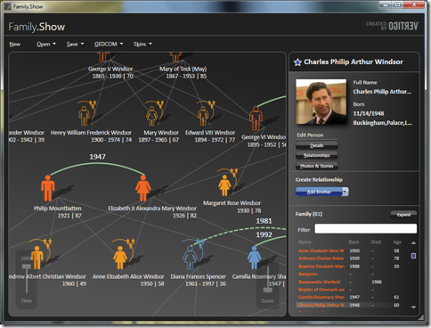

Tim’s blogged about a cool WPF reference application released onto CodePlex by Microsoft and Vertigo. Family.Show 3 is a family tree program that allows you to quickly enter relationships, key dates and other information. Dave tells me it’s not perfect for that (it’s a reference app and has some limitations in its implementation of the genealogy functionality he was after), but it is great for showing off some neat techniques, not least of which is the ability to install it directly from the Vertigo site via ClickOnce.
I’ve deliberately left out direct links from this post because you should check out Tim’s post and check out Family.Show.3
Tim Sneath : Announcing Family.Show v3 – Our WPF Reference Application